Nabídka nemovitostí
Byty, domy, pozemky, vinné sklepy i komerční prostory k prodeji a pronájmu. Každou nemovitost vám rádi ukážeme osobně.
Prodej
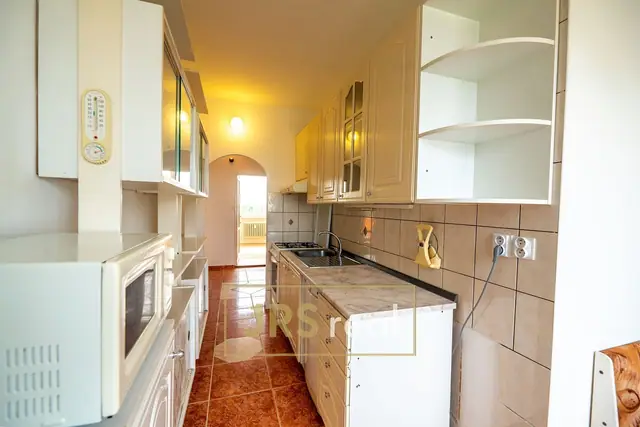
6Hutník, Veselí nad Moravou
Prodej bytu 3+1 75 m² s lodžií, Veselí nad Moravou
Pronájem
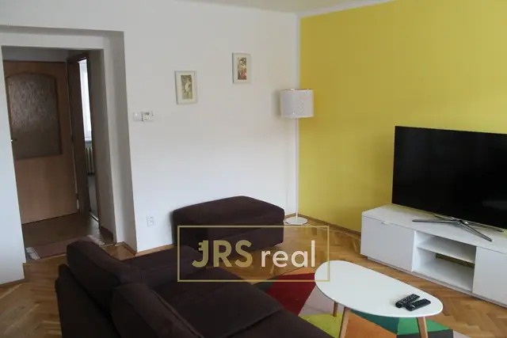
6J. Suka, Hodonín
Pronájem bytu 3+1, 62m², Hodonín
Pronájem
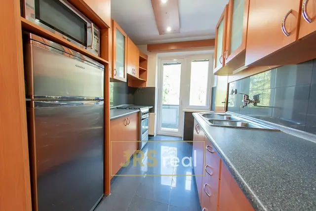
6Hutník, Veselí nad Moravou
Pronájem bytu 3+1 65 m², Veselí nad Moravou - Hutník
Pronájem
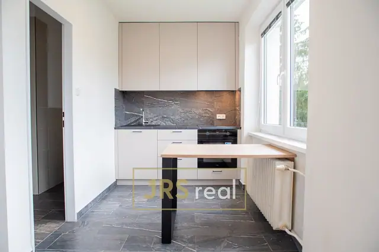
6Hutník, Veselí nad Moravou
Byt 1+kk k pronájmu ve Veselí nad Moravou – Hutník
Prodej
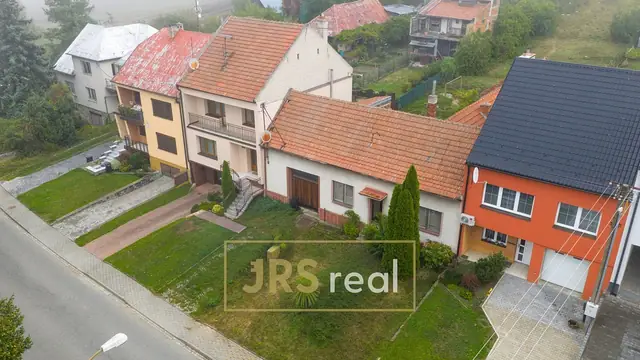
Korytná
Prodej rodinného domu k rekonstrukci 106 m², Korytná
Pronájem
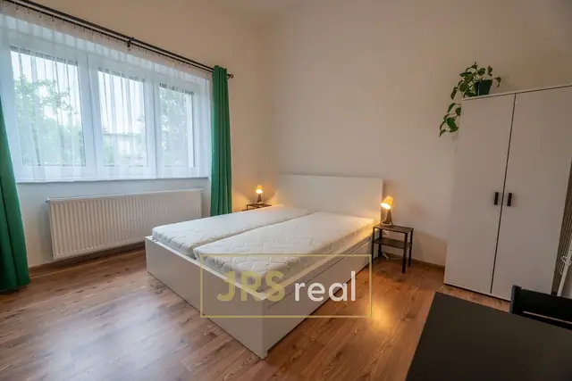
6Uherský Ostroh
Pronájem moderního a slunného bytu 1+kk 23 m², Uherský Ostroh
Prodej
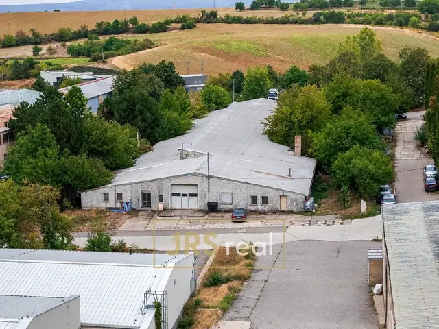
6Hustopeče
Výrobní a skladovací hala 1 710 m², Hustopeče
Pronájem
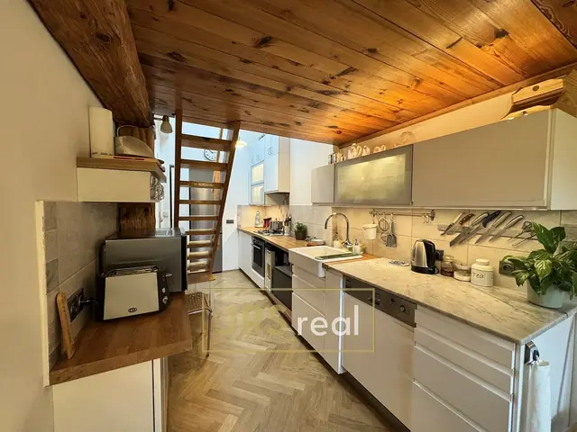
6Brno
Pronájem bytu 2+1 64 m², Brno - Žabovřesky
Prodej
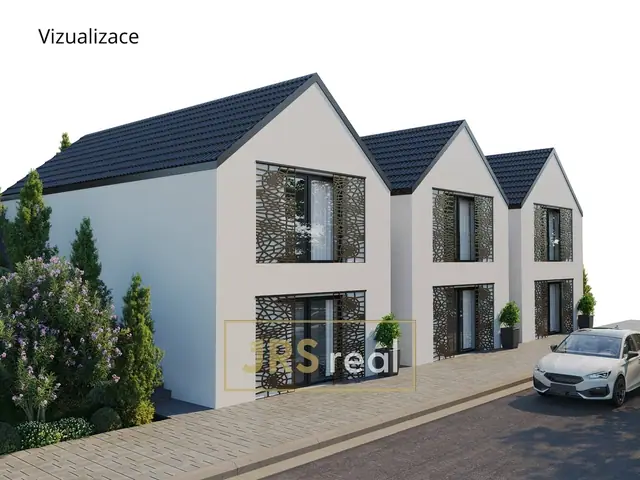
6Strachotín
RD s vinným sklepem a výhledem na Pálavu, Strachotín
Prodej
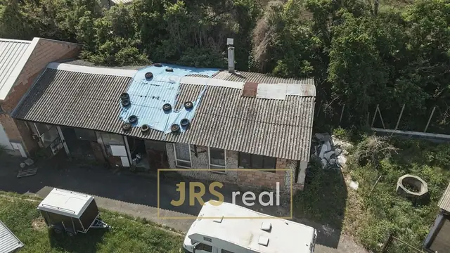
6Drnholec
Prodej komerčního prostoru 164 m² - Drnholec
Prodej
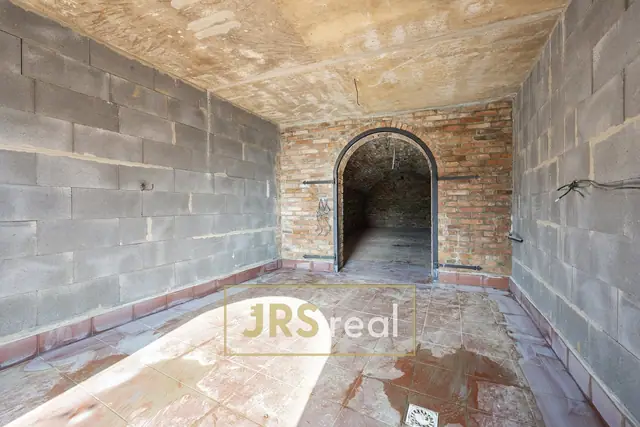
6Mutěnice
Prodej Vinného sklepa v Mutěnicích pod Dubňanskou horou, pozemek 2401 m²
Prodej
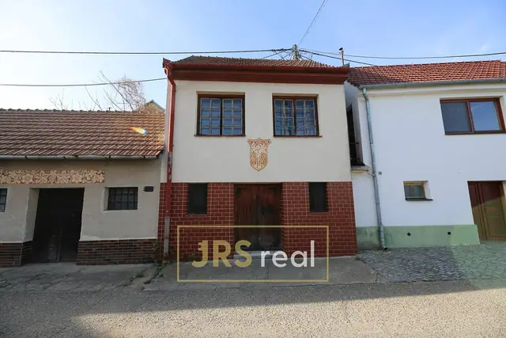
6Bořetice
Prodej vinného sklepa, 60 m² - Bořetice
Prodej
Prostřední Poříčí
Prodej zahrady s CP 3 371 m² - Prostřední Poříčí
Pronájem
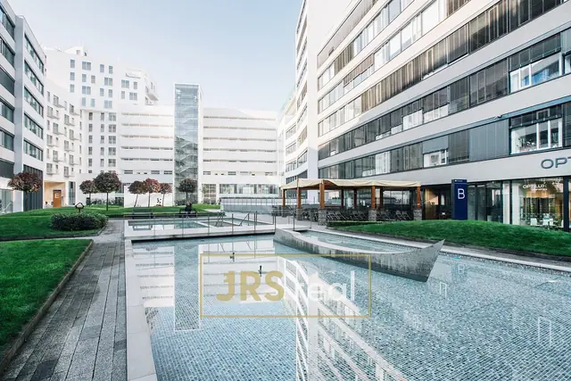
6Nové sady, Brno
Pronájem kancelářských prostor 80 m², TITANIUM Bussines Complex
Pronájem

Nové sady, Brno
Pronájem kancelářských prostor 310 m², TITANIUM Bussines Complex
Pronájem

Nové sady, Brno
Pronájem kancelářských prostor 160 m², TITANIUM Bussines Complex
Pronájem

Nové sady, Brno
Pronájem kancelářských prostor 150 m², TITANIUM Bussines Complex
Pronájem

Nové sady, Brno
Pronájem kancelářských prostor 780 m², TITANIUM Bussines Complex
Pronájem
 6
6
6Nové sady, Brno
Pronájem kancelářských prostor 1 500 m², TITANIUM Bussines Complex
Prodej
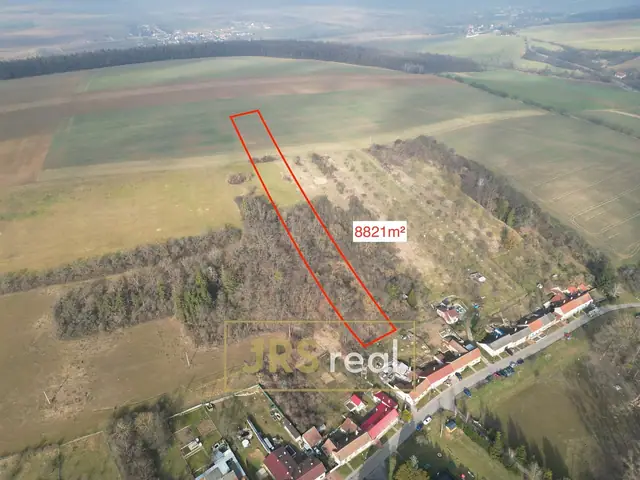
6Kroměříž
Soubor pozemků 8 821 m² - Kroměříž - Zlámanka
Prodej
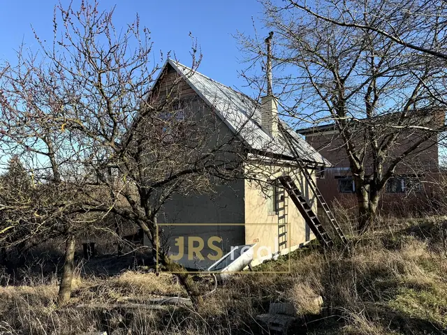
6Brno
Zahrada 1 847 m² - Brno - Dvorska
Prodej
Kněždub
Prodej pole, 7 019 m² - Kněždub
Prodej
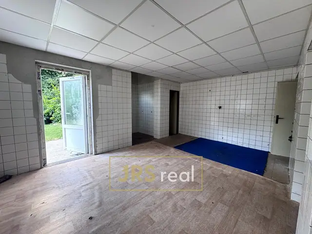
6Trpínky, Vyškov
Prodej nebytového prostoru, 62 m² - Vyškov Trpínky
Prodej
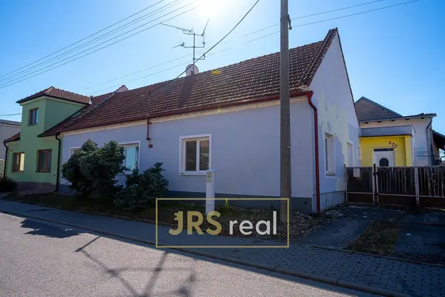
6Dolní Dunajovice
Prodej rodinného domu, 490 m² - Dolní Dunajovice
Tady zatím nic není
Zkuste upravit filtry, nebo nám napište, co hledáte – dáme vědět, jakmile se objeví.
Zadat poptávkuNenašli jste?
Zadat poptávku